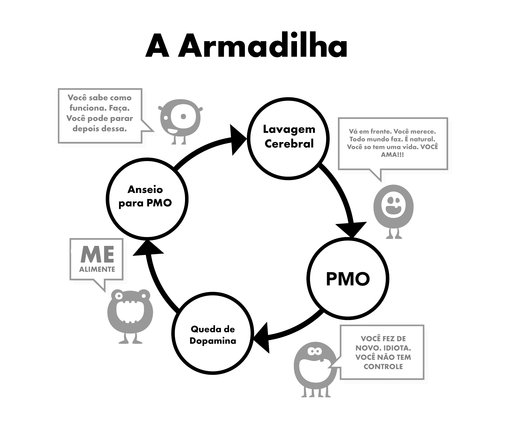

Capítulo 5 Lavagem Cerebral
Essa é a segunda razão que nos faz começar a usar. Para entender completamente essa lavagem cerebral precisamos primeiro examinar os efeitos do estímulo supranormal. Nosso cérebro não está preparado para a criação de um “harém virtual” que nos permite mudar muito mais de potenciais parceiros a cada quinze minutos, muito mais do que nossos ancestrais tiveram em todas suas vidas.
Havia muitos péssimos conselhos no passado, sendo um exemplo que não se deveria praticar a masturbação pois ela leva à cegueira. Essa, junto com outras táticas para assustar as pessoas, claramente foram abandonadas. Equívocos como esse foram derrubados pela ciência. Mas o bebê foi jogado fora com a água do banho; desde nossa infância nosso cérebro subconsciente é bombardeado com imagens e mensagens sexuais, revistas e anúncios carregados com sugestões. Alguns vídeos populares são extremamente sugestivos, mas não se desespere: transforme isso tudo num jogo a identificação de quais componentes eles estão usando – choque, novidade, cor, tamanho, tabu, etc. Um jogo como esse pode até mesmo ser ensinado para pré-adolescentes como forma de educá-los.
No seu centro, a mensagem é “a coisa mais preciosa na terra, minha última respiração e ação, será o orgasmo” É um exagero? Assista a trama de qualquer seriado ou filme e você verá a mistura da parte sensorial (toque, cheiro, voz) com a parte propagativa do sexo (orgasmo). O impacto disso não registra no nosso consciente, mas o subconsciente tem tempo de absorver.

5.1 Raciocinamento científico
Há publicidade do outro lado: o susto da disfunção erétil, da falta de motivação, de preferir pornografia a garotas reais. Isso pode ser encontrado em sites como YourBrainOnPorn e outras subculturas da internet, mas esses movimentos não fazem as pessoas pararem de usar. Logicamente falando, eles deveriam, mas o simples fato é que isso não acontece. Até os riscos de saúde listados de artigos bem revisados no YourBrainOnPorn não são suficientes nem para fazer um adolescente cogitar parar de usar.
Ironicamente, a força mais poderosa nessa confusão toda é o usuário. É uma falácia dizer que usuários possuem pouca força de vontade ou que são fracos. Você precisa ser forte para manter um vício depois de saber que ele existe. Talvez a parte mais dolorosa seja que eles se coloquem como fracassados e como sofredores introvertidos. É provável que um amigo poderia ser mais interessante pessoalmente se ele não se colocasse para baixo por procurar satisfação nesses tipos de prazeres.
5.2 Problemas ao usar a força de vontade
Usuários que estão abandonando a pornografia através da força de vontade culpam sua própria falta de força de vontade e arruínam sua paz e felicidade. Uma coisa é fracassar na disciplina e outra é o desprezo próprio. Apesar de tudo, não há nenhuma lei exigindo que você sempre esteja ereto, excitado e hábil, antes do sexo, pronto para satisfazer sua parceira. Nós estamos lidando com um vício, não um hábito, e em nenhum momento você tenta se convencer a parar um hábito como jogar futebol. Mas fazer o mesmo com o vício em pornografia é normalizado. Por quê?
A exposição constante a um estímulo supernatural remodela seu cérebro, e então construir uma resistência a essa lavagem cerebral é de importância crítica, assim como ao comprar um carro usado – concordando educadamente, mas não acreditando em qualquer palavra. Então não acredite que você tem que estar sempre transando loucamente – sempre da forma mais prazerosa e com a melhor performance possível – e usar pornografia quando não estiver.
Não se aventure pela pornografia “segura” também. Seu “pequeno monstro” inventou esse jogo para te enganar. Por acaso a pornografia amadora é certificada por alguma autoridade? Os sites pornográficos coletam dados dos usuários e usam isso para atender suas necessidades. Se eles veem uma subida em um certo gênero, focarão nele e distribuirão mais desse conteúdo o mais rápido possível. Não se deixe enganar por aquele discurso de que “é bom para o aprendizado” ou de vídeos divulgados como “seguros” para o público feminino. Comece a se perguntar: “Por que eu estou fazendo isso? Eu realmente preciso disso?”
Não, é claro que você não precisa!
A maioria dos usuários juram que só assistem pornografia leve e estática e que, portanto, está tudo bem, mas na verdade eles estão se debatendo contra a coleira, lutando com a força de vontade para resistir à tentação. Se feito por muito tempo ou frequentemente, isso esgota a força de vontade deles consideravelmente, e então eles começam então a fracassar em outros projetos de vida nos quais a força de vontade é de grande necessidade, como exercícios físicos, dieta etc. Falhar nessas áreas fazem o usuário se sentir miserável e culpado, desencadeando o uso de pornografia novamente. Se isso não for feito, eles descontarão a raiva e depressão que sentem nas pessoas que eles amam.
Uma vez que você se torna viciado em pornografia, a lavagem cerebral aumenta. Sua mente subconsciente sabe que o pequeno monstro precisa ser alimentado, bloqueando qualquer outra coisa. É o medo que impede as pessoas de saírem, medo desse sentimento vazio e inseguro que os usuários começam a ter depois de pararem de inundar seus cérebros com dopamina. Só porque você não está consciente dele não quer dizer que esse sentimento não está lá. Você não precisa entender isso mais do que um gato precisa entender onde estão os canos quentes de água: o gato simplesmente sabe que se sentar em um certo lugar sentirá quentura.
5.3 Passividade
A dificuldade principal com que nos deparamos ao parar de assistir pornografia vem da passividade das nossas mentes, aliada à nossa confiança em autoridades. Nossa educação em sociedade, reforçada pela nossa própria lavagem cerebral, oriunda do vício, é combinada com o poderoso efeito da socialização - a convivência com (e a opinião dos) nossos amigos, familiares e colegas. A frase “abandonar o vício” é uma clássica demonstração da lavagem cerebral: ela implica sacrifício genuíno. A bela verdade é que não há nada para abandonar. Pelo contrário: você se livrará de uma doença terrível e alcançará ganhos maravilhosos. Nós começaremos a remover a lavagem cerebral agora, começando com não dizer “abandonando” mas parando, saindo ou talvez – a verdadeira definição – escapando!
A única coisa que nos persuade a usar inicialmente é que há outras pessoas que estão fazendo, o que nos leva a sentir que estamos perdendo algo. Nos esforçamos para nos tornamos viciados, e ainda não encontramos o que estávamos perdendo. Toda vez que vemos o próximo vídeo nos asseguramos novamente de que há algo nele, senão as pessoas não estariam fazendo isso e a indústria não seria tão grande. Até quando eliminam o vício, os ex-usuários sentem que estão privados quando uma discussão sobre atrizes, vídeos, sites e afins aparecem no círculo social. “Deve ser bom, já que todos meus amigos estão falando sobre isso, certo?” Eles se sentem seguros, logo só darão uma olhada essa noite e antes que saibam estarão viciados de novo.
A lavagem cerebral é extremamente poderosa e você precisa estar consciente de seus efeitos. A tecnologia continua a crescer e o futuro trará sites mais rápidos e mais meios de acesso. A indústria pornográfica está investindo milhões em realidade virtual para que ela se torne a próxima “grande coisa”. Não sabemos para onde estamos indo, desequipados para lidar com a tecnologia atual ou a que virá.
Nós iremos remover essa lavagem cerebral, não é o não-usuário que está sendo privado, mas sim o usuário que está perdendo uma vida inteira de:
Saúde
Energia
Fortuna
Tranquilidade
Confiança
Coragem
Respeito próprio
Felicidade
Liberdade
O que eles ganham com esses consideráveis sacrifícios? ABSOLUTAMENTE NADA, a não ser a ilusão de tentar voltar ao estado de paz, tranquilidade e confiança que um não-usuário sempre desfruta.
5.4 Sintomas de Abstinência
Como explicado anteriormente, usuários acreditam que eles usam a pornografia para o prazer, para relaxar ou em prol de alguma forma de aprendizado. A razão verdadeira é o alívio dos sintomas de abstinência. Nosso subconsciente começa a aprender que a pornografia e masturbação em certos momentos tendem a ser prazerosas. Conforme nos tornamos mais viciados na droga, maior se torna a necessidade de aliviar os sintomas de abstinência e mais para fundo a sutil armadilha te arrasta. Esse processo ocorre tão lentamente que você nem está ciente dele. A maioria dos usuários jovens não entendem que estão viciados até que tentam parar e até nesses momentos muitos não admitem.
Veja essa conversa que um terapeuta teve com milhares de jovens:
Terapeuta: “Você está ciente de que a pornografia é uma droga e que a única razão pela qual você usa é porque você não consegue parar”
Paciente: “Absurdo! Eu gosto, se eu não gostasse eu pararia.”
Terapeuta: “Pare por uma semana para provar para mim que você pode se quiser.”
Paciente: “Não é necessário, eu gosto. Se eu quisesse parar, já teria.”
Terapeuta: “Apenas pare por uma semana para provar para si mesmo que não está viciado.”
Paciente: “Qual o ponto? Eu gosto.”
E esse comportamento não acontece com apenas um, mas com milhares de jovens. Como dito, usuários tendem a aliviar os sintomas de abstinência em momentos de estresse, tédio, concentração, relaxamento ou uma combinação desses. Nos próximos capítulos, trataremos desses aspectos da lavagem cerebral.